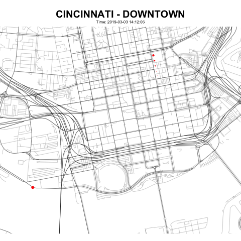
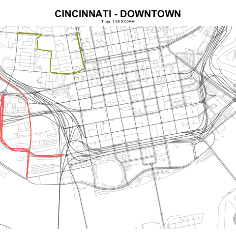

Creating rich, compelling visualizations is what I love to do. This gallery showcases a few examples of my work.
Below, I had some fun creating visuals using publicly-available data from the City of Cincinnati Open Data Portal. I hope you enjoy!
Animated Maps
Using vehicle GPS data from the Portal, this map tracks the movements of city-owned vehicles around downtown Cincinnati, using R and gganimate.

Tracing multiple vehicle paths over time reveals some really interesting patterns about how each navigates the city:
